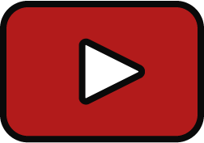

Content Creation
I'm Content Creator for YouTube and Twitch which means I provide weekly videos and streams for the online game Old School RuneScape (OSRS). My passion for OSRS in combination with the skills I've learned at CMD turned out to be the perfect formula to build an incredible community.
One day I hope to expand it even further to a personal application so I can cross-share all my content over different platforms in one place.
YouTube
50K+ Subscribers
3M+ Views
400K+ Hours Watched
Twitch
10K+ Followers
100K+ (Live) Views
200+ Hours Streamed